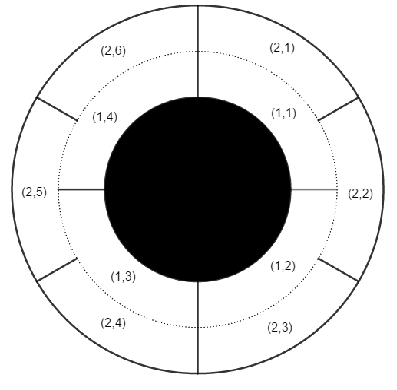

感觉 tf 的时候还是打几场 VP 好……
加 * 号的是当场过掉的，这样以后复习可以用。
*A. Mystical Mosaic
题意好难翻译啊，那就不翻译了吧。
反正直接模拟就可以了。
代码：58555087
*B. Three-level Laser
题目大意是给你一个长度为 n(n≤105) 的严格递增的正整数序列 {E}，让你求i<j<k 使得 Ek−Ei≤U 且η=Ek−EiEk−Ej最大。
考虑到严格递增应该是单调性问题。
显然如果 i 和k固定，那么 η 与Ej负相关，于是 i=j−1。
然后考虑枚举 i 算k，直接把上面的 Ek 去掉即可：η=Ek−EiEk−Ej=Ek−EiEk−Ei+Ei−Ej=1+Ek−EiEi−Ej
二分一下就好了。
代码：58555515
*C. Riverside Curio
题意大概就是有一个人每天去看一条河的水位，每次在水位上画一条线，并记录下严格高于当前水位的线有几条，记为 mi。令第i 天严格低于当前水位的线有 di 条，求 ∑di 的最小值，n≤105。
显然最少有 max{mi} 条线，然后我们找到这个位置，然后往两边跑。往后跑就直接模拟即可，因为之后是不会画新的线了。往前跑相当于是删线，显然是能删就删，维护一下前缀 max 即可。
代码：58556096
题意是说有 n(n≤105) 架飞机在一条数轴上飞，坐标为 xi，速度为vi，有xivi<0（往原点飞），现在可能有一速度为v 的风，只能预测出 v∈[−w,w]，当然保证∣vi∣<w。求有多少对飞机可能同时到达原点。
感觉自己好菜啊，推式子发现是跟斜率相关的一个东西，然后惊喜地发现这好像是道计算几何，然后码了一年……
我们考虑计算出飞机到达原点的时间 ti∈[li,ri]，考虑到风速与时间是呈一个一次函数的关系，画图便可知道如果是相向飞行的飞机i,j，只要[li,ri]∩[lj,rj]=∅ 即可，如果是同向的飞机 i,j，只要[li,ri]⊆[lj,rj] 或[li,ri]⊇[lj,rj]即可。
然后就变成了一个二维数点问题。
代码：58560521
E. Wardrobe
题解写在了 另一篇文章里 。
F. Minimal Subset Difference
太菜了，不会。
*A. Sasha and a Bit of Relax
题意大概就是给你一段长度为 n(n≤3×105) 序列 {a}(0≤ai<220)，求有多少个区间[l,r] 使得 r−l+1 是偶数且 ⨁i=lmai=⨁i=m+1rai，其中m=2l+r−1，⨁ 是指 xor。
显然只要 ⨁i=lrai=0 即可，然后开个桶算。
代码：58788064
*B. Sasha and One More Name
题意是给你一个回文串 s(1≤∣s∣≤5000)，求最小割多少刀然后重组变成一个不同的回文串，无解输出Impossible。
显然答案只有 1、2、Impossible 三种，Impossible直接判，1直接暴力枚举，剩下来的都是 2。
代码：58788424
C. Sasha and One More Name
数据结构题，直接抄了 这篇博客 的翻译：
维护以下三种操作
1 t s：在时刻t 插入命令 s。保证任意操作后，任意时刻至多只有一个命令。2 t：删除时刻t 的命令。3 l r v：求最小的 t∈[l,r]，使得f(t)=0。
其中
f(t)=v+∫ltg(x)dx
其中设在 [l,r] 时间内的命令依次为 (t1,s1),…,(tm,sm)，则：
g(t)=⎩⎪⎪⎪⎪⎪⎪⎪⎪⎨⎪⎪⎪⎪⎪⎪⎪⎪⎧0s1…sk…sml≤t<t1t1≤t<t2tk≤t<tk+1t≥tm.
若不存在，则返回 −1。
题解留坑吧……
打了场 Div. 2 感觉自己心情舒畅，然鹅还是自闭了……
话说我的 hash 好菜啊，为什么一定要打双哈希啊……
自闭了：
*A. Hotelier
直接模拟就可以了。
代码：58884080
*B. Block Adventure
还是直接模拟就可以了。
代码：58884001
*C. Round Corridor
大概就是有类似这样的一个圆形屋子，内层有 n 格，外层有 m 格，每层都有一面墙在 12 时的位置，每格大小均匀。内外层没有墙，但每层格子与格子之间有墙。多次询问 (sx,sy) 和(ex,ey)询问着两个格子能否相互到达。
n,m≤1018,q≤104。

显然可以把这个环形分成一段一段，每段都相连且独立（与其他格子不连通）。
假设一段有 x 个内层格子与 y 个外层格子，那显然有 xn=ym，即ny=mx，我们需要找到最小的x,y，也就是ny=mx=lcm(n,m)=gcd(n,m)nm，也就是x=gcd(n,m)n,y=gcd(n,m)m，然后每次O(1) 判断两个点是否在同一联通块中即可。
代码：58883764
*D. White Lines
题意是有一块 n×n 的画布，有一些像素点是 W，有一些是B，你可以将一个k×k 的子矩阵中所有的 B 全部变成 W，问做多能有多少行列是全白色的，n≤2000。
我们考虑行和列分开来看，我们令 fi,j 表示左上角在第 i 行第 j 列，会把多少原来不是全白的行变成全白的行，同理可以定义 gi,j 表示会把多少原来不是全白的列变成全白的列。当然，为了复制粘贴方便，代码中把 gi,j 定义为了左上角在第 j 行第 i 列。
由于转移是对称（行和列的方程一样）的，所以我们就仅考虑行。我们考虑要把一行变成全白，必须把该行上最左边的黑色格子和最右边的黑色格子全部覆盖到，所以对于每行我们可以 O(1) 计算。
我们考虑先 O(nk) 暴力算出 f1,j，然后每次计算fi,j 考虑增加第 i+k−1 行的贡献并删除第 i−1 行的贡献即可。
这样复杂度就是 O(n2) 的了。
代码：58884654
E.Compress Words
题目大意是有 n 个字符串 si，从左往右依次合并每一个字符串，就是找到之前合并完的串的最长后缀使其是要合并的那个串的前缀，输出最终合并完的串，n≤105,∑∣si∣≤106。
直接哈希就可以了，复杂度 O(n)……
大概需要双哈希，我的单哈希 wa on 66。
代码：58886006
又是一场愉快的 Div. 2。
可惜窝还是爆蛋了……
*A. Distinct Digits
直接模拟即可……
代码：61680483
*B. Filling the Grid
直接模拟即可……
代码：61680658
*C. Primes and Multiplication
题目大意有点复杂，然后我就看错了一年的题……
定义 prime(x) 表示 x 的质因子集合，g(x,p)表示最大的 pk∣x(k∈N)，f(x,y)=∏k∈prime(x)g(y,k)，求∏i=1nf(x,i)。（x≤109,n≤1018）
考虑到全是乘法，显然满足交换律。
所以我们对每个质因子分开来求，最后乘起来即可。
我们考虑质因子 k，显然1∼k−1 的区间贡献是 1，k∼k2−1 的贡献是 k，k2∼k3−1 的贡献是 k2……
然后不难发现只有 log 个这样的区间，所以总复杂度O(x+logxlogn)。
代码：61681335
*D. Complete Tripartite
有 n(3≤n≤105) 个点 m(0≤m≤min(3⋅105,2n(n−1))) 条边的无向无自环无重边图，需要对每条边染色（1,2,3），使得每种颜色自己的点之间没有边，其余的必须两两有边，求一种方案或无解。
直接模拟即可……
代码：61681851
*E. Another Filling the Grid
有一个 n×n 的矩阵，需要将每个格子用 1∼k 的数字填充，要求每行每列都有至少一个 1，求方案数。n≤250,k≤109。
O(n3) 的dp很好想，直接令 fi,j 表示到第 i 行已经有 j 列有 1。
考虑转移，枚举一个 t 表示这一列之前有多少列有 1，那么这些格子可以乱填，为kt。其中j−t 个格子只能填 1，其余格子不能填1。这样直接转移过去即可。
由于每一行也至少要有一个 1，所以转移时一行中没有一个1 的方案数减掉即可。
代码：61682746
结果一看题解发现复杂度可以更优。
我们考虑容斥，有 i 行j列没有 1，所以答案就是：
i=0∑n(−1)i(in)j=0∑n(−1)j(jn)k(n−i)(n−j)(k−1)ni+nj−ij
当然写的好看一点也可以是：
i=0∑nj=0∑n(−1)i+j(in)(jn)k(n−i)(n−j)(k−1)ni+nj−ij
这样就可以 n2logn 啦！
然后我们考虑继续优化。
我们观察后面那只 ∑：
j=0∑n(−1)j(jn)k(n−i)(n−j)(k−1)ni+nj−ij
我们发现她可以转换成一个二项式展开的形式，也就是把后面的 (k−1)ni+nj−ij 看成是 (k−1)i(n−j)⋅(k−1)nj：
j=0∑n(jn)(kn−i(k−1)i)n−j(−(k−1)n)j=(kn−i(k−1)i−(k−1)n)n
于是最终答案就变成了：
i=0∑n(−1)i(in)(kn−i(k−1)i−(k−1)n)n
复杂度O(nlogn)。